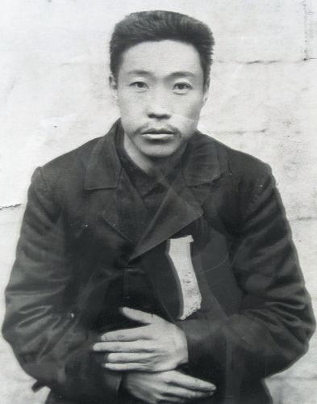
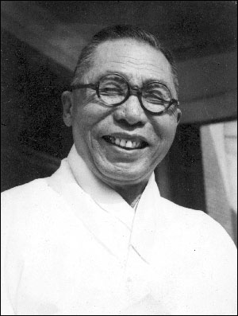
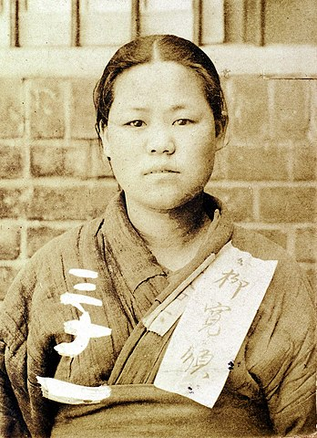
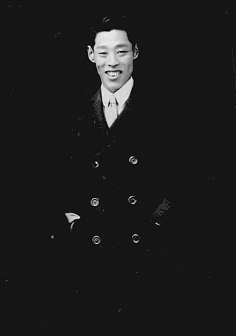
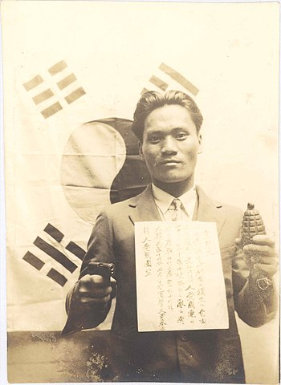
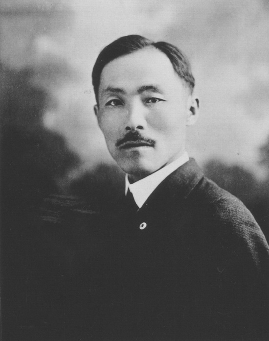
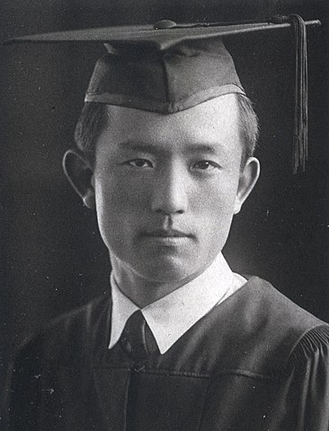
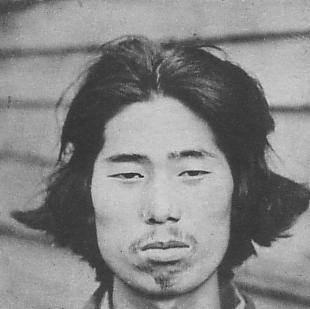
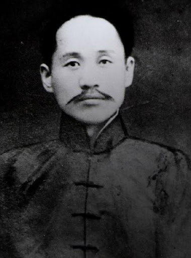
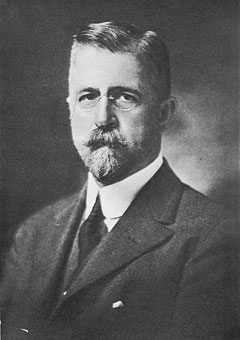

"이익을 보거든 정의를 생각하고,위태로움을 보거든 목숨을 바쳐라."
-안중근(1879~1949)-
주요 업적 : 이토 히로부미 처단

"우리 민족의 지나간 역사가 빛나지 아니함이 아니나, 그것은 아직 서곡이었다. 우리가 주연 배우로 세계 역사의 무대에 나서는 것은 오늘 이후다."
-김 구(1876~1949)-
주요 업적 : 대한민국 임시정부 주석

"내 손톱이 빠져 나가고, 내 귀와 코가 잘리고, 내 손과 다리가 부러져도 그 고통을 이길 수 있사오나, 나라를 잃어버린 그 고통만은 견딜 수가 없습니다."
-유관순(1902~1920)-
주요 업적 : 3.1 만세시위 참여

“인생의 목적이 쾌락이라면 지난 31년 동안 육신의 쾌락은 대강 맛보았습니다. 이제는 영원한 쾌락을 꿈꾸며 우리 독립 사업에 헌신할 목적으로 상하이에 왔습니다."
-이봉창(1901~1932)-
주요 업적 : 히로히토 폭살 시도

"반드시 조선을 위해 용감한 투사가 되어라. 나의 빈 무덤 앞에 찾아와 한 잔의 술을 부어라. 그리고 너희들은 아비 없음을 슬퍼하지 마라. 대장부는 집을 나가 뜻을 이루기 전에는 살아 돌아오지 않는다."
-윤봉길(1908~1932)-
주요 업적 : 홍커우공원 폭탄 의거

"나는 밥을 먹어도 대한의 독립을 위해, 잠을 자도 대한의 독립을 위해 해왔다. 이것은 내 목숨이 없어질 때까지 변함이 없을 것이다."
-안창호(1878~1938)-
주요 업적 : 독립협회와 공립협회 활동

"죽는 날까지 하늘을 우러러 한 점 부끄럼이 없기를. 잎새에 이는 바람에도 나는 괴로워했다."
-윤동주(1917~1945)-
주요 업적 : 저항시 작품 활동

"일본에게 입힌 상처를 낫게 할 수는 없다. 내가 뿌린 씨앗은 후세에 남아 딱딱한 지각을 깨고 싹을 틔워 꽃을 피우고 그리고 종국에는 열매를 맺게 될 것이다. 나는 승자다. 영원한 승리지다."
-박 열(1902~1974)-
주요 업적 : 의열단 활동

"자신의 나라를 사랑하려거든 역사를 읽을 것이며 다른사람에게 나라를 사랑하게 하려거든 역사를 읽게 할 것이다."
-신채호(1880~1936)-
주요 업적 : 한국사 연구

"나는 웨스트민스터 사원보다도 한국 땅에 묻히기를 원하노라."
-호머 헐버트(1863~1949)-
주요 업적 : 선교사 활동 및 한글 연구